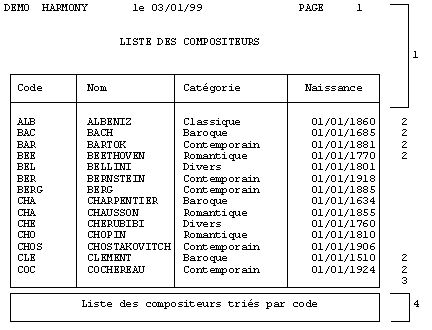
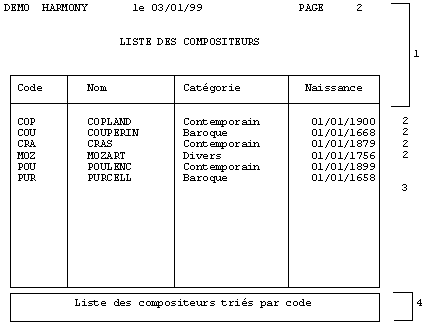

Pour aborder la conception d'un masque d'imprimante, nous allons examiner un état réalisé avec Xwin ainsi que le programme Diva qui utilise ce masque. Bien que l'interface entre les masques d'imprimante et le langage Diva soit abordée en détail dans un autre livre (Ymig), l'examen rapide de ce programme type vous permettra de bien comprendre la réalisation du masque.
En général, nous retrouvons toujours le même type d'éléments dans un état, à savoir :
Un en-tête de page ;
des lignes détail ;
une ligne récapitulative des lignes détails (par exemple un sous-total) ;
un pied de page.
Chaque élément d'un état se nomme un bloc. Un masque d'impression est donc composé de blocs, comprenant des textes, des données, des cadres, des images, etc.
Voici un exemple d'état :


Bloc numéro 1 : en-tête de page (10 lignes imprimées de la ligne 1 à la ligne 10).
Bloc numéro 2 : détail (1 ligne imprimée entre les lignes 11 et 61).
Bloc numéro 3 : récapitulatif (1 ligne imprimée ici derrière la dernière ligne détail de chaque page).
Bloc numéro 4 : pied de page (4 lignes imprimées de la ligne 63 à la ligne 66).
Et voici le corps du programme Diva qui a été exécuté :
XmiPrint Harmony.Imasque 1 ;premier bloc d'en-tête
Loop Hread (Fcomp, Cpenr) ;boucle de lecture et d'impression
XmiPrint Harmony.Imasque 2 ;des blocs détail
Endloop
;dernier bas de page :
XmiPrint1 Harmony.Imasque 3 0 \ ;récapitulatif final
Harmony.Ideborde \
Harmony.IsautAvant \
Harmony.IsautApres
XmiPrint Harmony.Imasque 4 ;pied